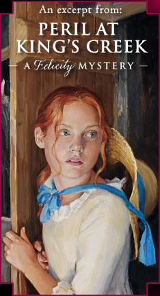

Felicity returns home late after a long ride on her mare, Penny, only to discover a mysterious guest...
Felicity hurried into the dining room, going so fast that she nearly slipped on the polished floor of the entrance hall. The serving maids had already brought in food from the kitchen and set it on the sideboard. There was ham and mutton, a steaming plate of buckwheat cakes, candied apples, and huckleberries in thick cream. Tildy, in her white turban and crisp white apron, stood by to serve.
In the gilt mirror above the sideboard, the long cherrywood dining table was reflected, and Felicity could see Mother and the dinner guests already seated. Father was not at the table because he had stayed in Williamsburg for the summer to run his store. Felicity was eagerly looking forward to his visit in a few weeks. Mother sat at the head of the table, with Mr. and Mrs. Wentworth on either side of her. Beside Mr. Wentworth sat a young man wearing a fancy coat with gold buttons and ruffles at the wrists. His thick black hair was pulled back in a queue.
Felicity remembered that Mother had told her the Wentworths would be bringing their houseguest, someone from Philadelphia. The man in the fancy coat must be the Wentworths’ visitor—which meant that the proper seating for Felicity would be beside Mrs. Wentworth.
Felicity moved to stand behind that chair and waited to be introduced. Mother nodded to her. “There you are, Daughter,” Mother said. “Mr. Haskall, this is my eldest daughter, Felicity.”
Mr. Haskall and Mr. Wentworth had politely stood up when Felicity came into the room. Felicity curtsied. “Pleased to make your acquaintance, Mr. Haskall,” she said.
“And yours, Miss Merriman,” Mr. Haskall answered with a bow.
Felicity thought he looked vaguely familiar. She sat down, trying to place him, and at first she didn’t notice Mrs. Wentworth leaning toward her—until Mrs. Wentworth sniffed, very loudly. “Do I smell…horse?” Mrs. Wentworth asked, turning up her nose.
Felicity felt herself flush, and her hands flew up to cover her face. Mr. Wentworth cleared his throat. Mother frowned. Mr. Haskall wrinkled his forehead, sniffed, and said, “Horse? My dear Mrs. Wentworth, I don’t smell a thing.”
“Don’t you?” said Mrs. Wentworth, pulling back from Felicity. “Perhaps it is the mutton.”
Mother raised an eyebrow.
“Mrs. Merriman,” stammered Mrs. Wentworth. “I didn’t mean to imply that the mutton…” She stopped, her face as red as the pickled beets in Mother’s crystal dish. Then she cleared her throat, spread out her napkins, and said brightly, “Well. Everthing looks so delicious. And I am quite famished. Are you not famished, Mr. Haskall?”
“Oh, quite famished indeed,” Mr. Haskall said. He cast a quick, amused glance in Felicity’s direction, his brown eyes twinkling. As he did so, Felicity’s heart gave a little jump. She had seen Mr. Haskall before. She was sure of it.
But where?